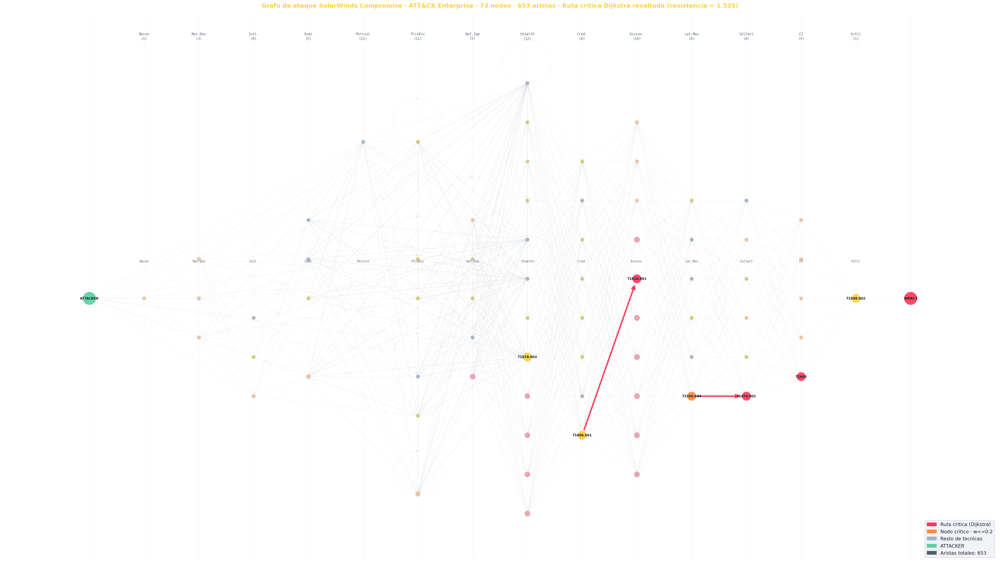

Grafo dirigido SolarWinds · 73 nodos ordenados por táctica (kill chain, izq→der) · ruta crítica de Dijkstra resaltada en rojo (resistencia = 1.535)
La red resultante
Todas las progresiones posibles
Cada nodo es una técnica real; cada arista, un paso viable en la kill chain. El grafo es denso y con ciclos (no es un DAG): existen muchísimas rutas alternativas del acceso al impacto.
73
nodos (71 técnicas + 2)
ATTACKER — punto de entrada
técnicas ATT&CK por táctica
IMPACT — objetivo logrado